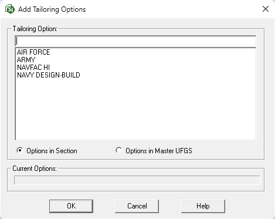
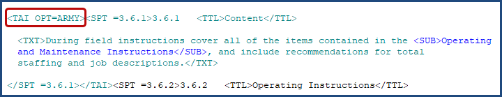
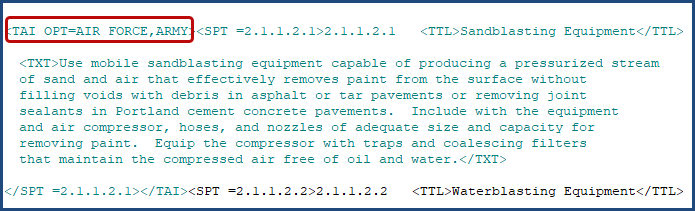

This command can also be executed from the SI Editor's Right-click menu.
The Tailoring command serves as a management tool for Tailoring Options, offering the functionality to establish new options or eliminate existing ones.
The Tailoring feature facilitates specification editing by providing a mechanism for pre-editing text segments designated with TAI tags by the UFGS Technical Proponent. This empowers specification editors to selectively include or exclude entire portions of text, thereby eliminating the need for manual editing of individual occurrences of irrelevant requirements.
 To learn more about using Tailoring in the UFGS Master specifications, refer to the Unified Facilities Guide Specifications (UFGS) Format Standard (UFS 1-300-02).
To learn more about using Tailoring in the UFGS Master specifications, refer to the Unified Facilities Guide Specifications (UFGS) Format Standard (UFS 1-300-02).
Tailoring Options are integrated into the specification by the UFGS Technical Proponents during the creation of Master specifications. This allows for customization by enabling the exclusion of irrelevant project requirements, thereby ensuring a tailored and efficient specification.
To streamline the insertion of Tailoring Options and eliminate redundancy, the Add Tailoring Options window provides a convenient interface to select existing options from the active Section or UFGS Master.

SpecsIntact allows for multiple options within a single Tailoring Option when the tailored content applies to more than one category (e.g., Agency, project methods, locations, or products). Use commas without spaces to separate options (e.g., Army,Navy,Air Force).
 There is a sixty (60) character limit per option within the Tailoring tag.
There is a sixty (60) character limit per option within the Tailoring tag.
This function removes individual instances of Tailoring Options from the TAI tag. For example, if the TAI tag is <TAI OPT=ARMY,NAVY,DESIGN-BID-BUILD>, you can remove 'DESIGN-BID-BUILD' resulting in <TAI OPT=ARMY,NAVY>. In the case of a single option, the option and accompanying TAI tag will be deleted. This action only affects the specific occurrence, leaving other instances within the Section unaffected.


 Use the Ctrl key for individual non-consecutive selections and the Shift key for grouped consecutive options.
Use the Ctrl key for individual non-consecutive selections and the Shift key for grouped consecutive options.
The software allows you to modify Tailoring (TAI) tags by adding or removing options as needed. This flexibility is helpful for situations where a change is required, such as replacing 'USACE' with 'Army'. To make this change, you would add 'Army' as a new Tailoring Option, then remove the outdated 'USACE' option. To do this, perform the following steps:
 Watch the Inserting and Managing Tailoring Options eLearning module within Chapter 7 - Master Preparation.
Watch the Inserting and Managing Tailoring Options eLearning module within Chapter 7 - Master Preparation.
Users are encouraged to visit the SpecsIntact Website's Support & Help Center for access to all of our User Tools, including Web-Based Help (containing Troubleshooting, Frequently Asked Questions (FAQs), Technical Notes, and Known Problems), eLearning Modules (video tutorials), and printable Guides.
| CONTACT US: | ||
| 256.895.5505 | ||
| SpecsIntact@usace.army.mil | ||
| SpecsIntact.wbdg.org | ||